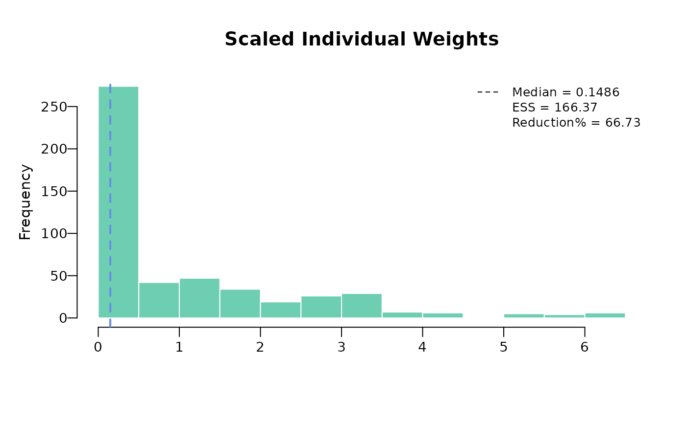
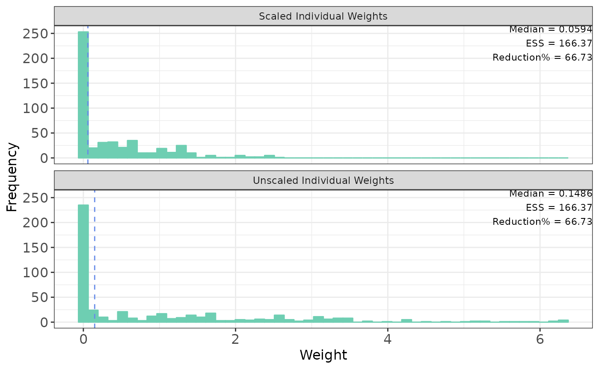
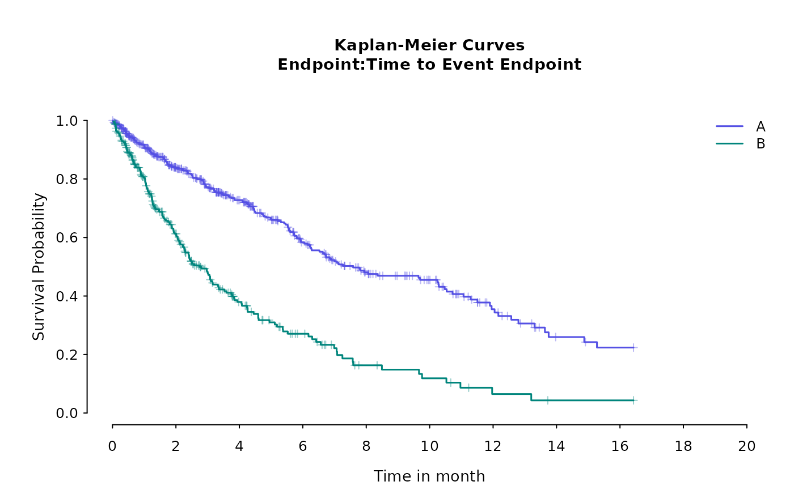
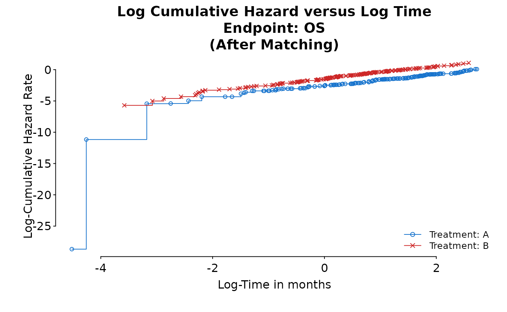
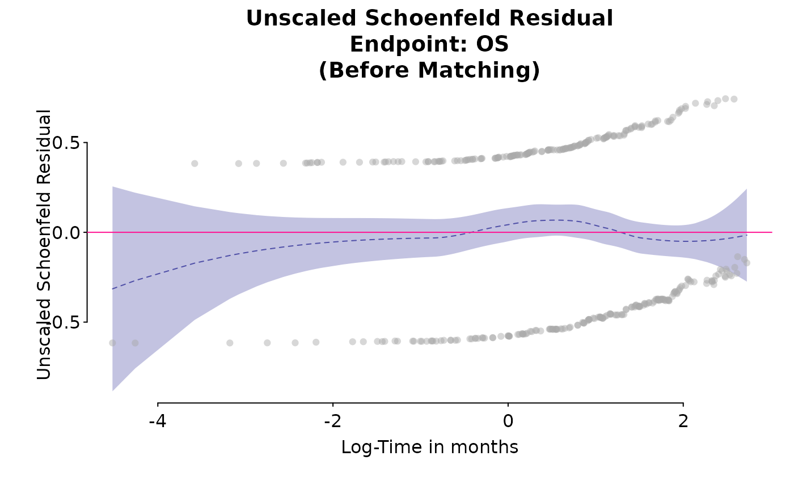

Introduction
This package describes the steps required to perform a
matching-adjusted indirect comparison (MAIC) analysis using the
maicplus package in R where the endpoint of interest is
either time-to-event (e.g. overall survival) or binary (e.g. objective
tumor response).
The methods described in this document are based on those originally described by Signorovitch et al. 2010 and described in the National Institute for Health and Care Excellence (NICE) Decision Support Unit (DSU) Technical Support Document (TSD) 18. [signorovitch2010; phillippo2016a]
MAIC methods are often required when:
- There is no common comparator treatment to link a clinical trial of a new intervention to clinical trials of other treatments in a given disease area. For example if the only study of a new intervention is a single arm trial with no control group. This is commonly referred to as an unanchored MAIC.
- A common comparator is available to link a clinical trial of a new intervention to a clinical trial of one other treatment in a given disease area but there are substantial differences in patient demographic or disease characteristics that are believed to be treatment effect modifiers. This is commonly referred to as an anchored MAIC.
The premise of MAIC methods is to adjust for between-trial differences in patient demographic or disease characteristics at baseline. When a common treatment comparator or ‘linked network’ are unavailable, a MAIC assumes that differences between absolute outcomes that would be observed in each trial are entirely explained by imbalances in prognostic variables and treatment effect modifiers. Prognostic variables are those that are predictive of disease outcomes, independent of the treatment received. For example, older patients may have increased risk of death compared to younger patients. Treatment effect modifiers are those variables that influence the relative effect of one treatment compared to another. For example patients with a better performance status may experience a larger treatment benefit than those with a worse performance status. Under this assumption, every prognostic variable and every treatment effect modifier that is imbalanced between the two studies must be available. This assumption is generally considered very difficult to meet. [phillippo2016a] There are several ways of identifying prognostic variables/treatment effect modifiers to be used in the MAIC analyses, some of which include:
- Clinical expertise (when available to a project)
- Published papers/previous submissions (what has been identified in the disease area previously)
- Univariable/multivariable regression analyses to identify which covariates have a significant effect on the outcome
- Subgroup analyses of clinical trials may identify interactions between patient characteristics and the relative treatment effect
Theory behind MAIC
We will briefly go over the theory behind MAIC. For detailed information, see Signorovitch et al. 2010.
Let us define \(t_i\) to be the treatment patient \(i\) received. We assume \(t_i=0\) if the patient received intervention (IPD) and \(t_i=1\) if the patient received comparator treatment. The causal effect of treatment \(T=0\) vs \(T=1\) on the mean of the outcome \(Y\) can be estimated as below
\[ \frac{\sum_{i=1}^{n}y_{i}(1-t_{i})w_{i}}{\sum_{i=1}^{n}(1-t_{i})w_{i}}-\bar{y}_{1} \]
where \(w_i=\frac{Pr(T_i=1\mid x_i)}{Pr(T_i=0\mid x_i)}\) is the odds that patient \(i\) received treatment \(T=1\) vs \(T=0\) (i.e. enrolls in aggregate data study vs IPD study) given baseline characteristics \(x_i\). Thus, the patients receiving \(T=0\) are re-weighted to match the distribution of patients receiving \(T=1\). Note that this causal effect would be the case when the outcome \(Y\) is continuous. If the outcome is binary, \(Y\) would be a proportion and we would use a link function such as logit to give us the causal effect in an odds ratio scale. As in propensity score methods, we may assume \(w_i\) to follow logistic regression form
\[ w_{i}=exp(x_i^{T}\beta) \]
However, in order to estimate \(\beta\), we cannot use maximum likelihood approach because we do not have IPD for both trials. Instead, we use method of moments. We estimate \(\beta\) such that the weighted averages of the covariates in the IPD exactly matches the aggregate data averages. Mathematically speaking, we want to estimate \(\beta\) such that:
\[ 0=\frac{\sum_{i=1}^{n}x_{i}exp(x_i^{T}\hat{\beta})}{\sum_{i=1}^{n}exp(x_i^{T}\hat{\beta})}-\bar{x}_{agg} \]
If the \(x_i\) contains all confounders and the logistic regression for \(w_i\) is correctly specified, we obtain a consistent estimate of the causal effect of intervention vs comparator treatment. Above equation is equivalent to
\[ 0=\sum_{i=1}^{n}(x_{i}-\bar{x}_{agg})exp(x_{i}^{T}\hat{\beta}) \]
We could transform transform IPD by subtracting the aggregate data means (this is why centering is needed when preprocessing).
\[ 0=\sum_{i=1}^{n}x_{i}exp(x_{i}^{T}\hat{\beta}) \]
Note that this is the first derivative of
\[ Q(\beta)=\sum_{i=1}^{n}exp(x_{i}^{T}\hat{\beta}) \]
which has second derivative
\[ Q''(\beta)=\sum_{i=1}^{n}x_ix_i^Texp(x_{i}^{T}\hat{\beta}) \]
Since \(Q''(\beta)\) is positive-definite for all \(\beta\), \(Q(\beta)\) is convex and any finite solution from the equation is unique and corresponds to the global minimum of \(Q(\beta)\). Thus, we can use optimization methods to calculate \(\beta\).
Example scenario
We present an unanchored MAIC of two treatments in lung cancer. The two endpoints being compared are overall survival (a time to event outcome) and objective response (a binary outcome). The data available are:
- Individual patient data from a single arm study
- Aggregate summary data for the comparator study
- Pseudo patient data from the comparator study. This is not required for the matching process but is needed to derive the relative treatment effects between the internal treatment and comparator treatment.
Preprocessing
Additional suggested packages for this vignette:
library(dplyr) # this is used for data merging/cleaning. Package itself does not depend on dplyr
#>
#> Attaching package: 'dplyr'
#> The following objects are masked from 'package:stats':
#>
#> filter, lag
#> The following objects are masked from 'package:base':
#>
#> intersect, setdiff, setequal, union
# library(clubSandwich) # For robust standard error in logistic regression
library(sandwich)
library(survival)
library(survminer) # for ggsurvplot
#> Loading required package: ggplot2
#> Loading required package: ggpubr
#>
#> Attaching package: 'survminer'
#> The following object is masked from 'package:survival':
#>
#> myeloma
library(ggplot2) # for ggplot functions
library(boot) # for bootstrapping
#>
#> Attaching package: 'boot'
#> The following object is masked from 'package:survival':
#>
#> amlPreprocessing IPD
In this example scenario, age, sex, the Eastern Cooperative Oncology Group (ECOG) performance status, smoking status, and number of previous treatments have been identified as imbalanced prognostic variables/treatment effect modifiers.
This example reads in and combines data from three standard simulated data sets (adsl, adrs and adtte) which are saved as ‘.csv’ files.
adsl <- read.csv(system.file("extdata", "adsl.csv",
package = "maicplus",
mustWork = TRUE
))
adrs <- read.csv(system.file("extdata", "adrs.csv",
package = "maicplus",
mustWork = TRUE
))
adtte <- read.csv(system.file("extdata", "adtte.csv", package = "maicplus", mustWork = TRUE))
# Data containing the matching variables
adsl <- adsl %>%
mutate(SEX_MALE = ifelse(SEX == "Male", 1, 0)) %>%
mutate(AGE_SQUARED = AGE^2)
# Could use built-in function for dummizing variables
# adsl <- dummize_ipd(adsl, dummize_cols=c("SEX"), dummize_ref_level=c("Female"))
# Response data
adrs <- adrs %>%
filter(PARAM == "Response") %>%
transmute(USUBJID, ARM, RESPONSE = AVAL)
# Time to event data (overall survival)
adtte <- adtte %>%
filter(PARAMCD == "OS") %>%
mutate(EVENT = 1 - CNSR) %>%
transmute(USUBJID, ARM, TIME = AVAL, EVENT)
# Combine all ipd data
ipd <- adsl %>%
full_join(adrs, by = c("USUBJID", "ARM")) %>%
full_join(adtte, by = c("USUBJID", "ARM"))
head(ipd)
#> X USUBJID ARM AGE SEX SMOKE ECOG0 N_PR_THER SEX_MALE AGE_SQUARED RESPONSE
#> 1 1 1 A 45 Male 0 0 4 1 2025 0
#> 2 2 2 A 71 Male 0 0 3 1 5041 1
#> 3 3 3 A 58 Male 1 1 2 1 3364 1
#> 4 4 4 A 48 Female 0 1 4 0 2304 1
#> 5 5 5 A 69 Male 0 1 4 1 4761 0
#> 6 6 6 A 48 Female 0 1 4 0 2304 0
#> TIME EVENT
#> 1 281.5195 0
#> 2 500.0000 0
#> 3 304.6406 0
#> 4 102.4731 0
#> 5 101.6632 0
#> 6 237.0593 1Preprocessing aggregate data
There are two ways of specifying aggregate data. One approach is to
read in aggregate data using an excel spreadsheet. In the spreadsheet,
possible variable types include mean, median, or standard deviation for
continuous variables and count or proportion for binary variables. The
naming should be followed by these suffixes accordingly: _COUNT, _MEAN,
_MEDIAN, _SD, _PROP. Then, process_agd will convert the
count into proportions.
Other way is to define data frame of aggregate data in R. If you do it this way, _COUNT prefix should not be specified and only proportion is allowed for binary variables. Other suffix names would be the same as the first approach.
Possible missingness in the binary variables should be accounted for by subtracting the denominator by the missing count i.e. proportion = count / (N - missing).
# Through excel spreadsheet
# target_pop <- read.csv(system.file("extdata","aggregate_data_example_1.csv", package = "maicplus", mustWork = TRUE))
# agd <- process_agd(target_pop)
# Second approach by defining a data frame in R
agd <- data.frame(
STUDY = "Lung study",
ARM = "Total",
N = 300,
AGE_MEAN = 51,
AGE_MEDIAN = 49,
AGE_SD = 3.25,
SEX_MALE_PROP = 147 / 300,
ECOG0_PROP = 0.40,
SMOKE_PROP = 58 / (300 - 5),
N_PR_THER_MEDIAN = 2
)Preprocessing aggregate data
#### prepare data
ipd_centered <- center_ipd(ipd = ipd, agd = agd)
head(ipd_centered)
#> X USUBJID ARM AGE SEX SMOKE ECOG0 N_PR_THER SEX_MALE AGE_SQUARED RESPONSE
#> 1 1 1 A 45 Male 0 0 4 1 2025 0
#> 2 2 2 A 71 Male 0 0 3 1 5041 1
#> 3 3 3 A 58 Male 1 1 2 1 3364 1
#> 4 4 4 A 48 Female 0 1 4 0 2304 1
#> 5 5 5 A 69 Male 0 1 4 1 4761 0
#> 6 6 6 A 48 Female 0 1 4 0 2304 0
#> TIME EVENT AGE_CENTERED AGE_MEDIAN_CENTERED AGE_SQUARED_CENTERED
#> 1 281.5195 0 -6 -0.5 -586.5625
#> 2 500.0000 0 20 0.5 2429.4375
#> 3 304.6406 0 7 0.5 752.4375
#> 4 102.4731 0 -3 -0.5 -307.5625
#> 5 101.6632 0 18 0.5 2149.4375
#> 6 237.0593 1 -3 -0.5 -307.5625
#> SEX_MALE_CENTERED ECOG0_CENTERED SMOKE_CENTERED N_PR_THER_MEDIAN_CENTERED
#> 1 0.51 -0.4 -0.1966102 0.5
#> 2 0.51 -0.4 -0.1966102 0.5
#> 3 0.51 0.6 0.8033898 -0.5
#> 4 -0.49 0.6 -0.1966102 0.5
#> 5 0.51 0.6 -0.1966102 0.5
#> 6 -0.49 0.6 -0.1966102 0.5How to handle standard deviation aggregate summary
As described by Phillippo et al. 2016, balancing on both mean and standard deviation for continuous variables (where possible) may be considered in some cases. If a standard deviation is provided in the comparator population, preprocessing is done so that in the target population, \(E(X^2)\) is calculated using the variance formula \(Var(X)=E(X^{2})-E(X)^{2}\). This \(E(X^2)\) in the target population is matched with the IPD level data, which is why \(X^{2}\) was calculated during the preprocessing stage of IPD.
How to handle median aggregate summary
If a median is provided, IPD is preprocessed to categorize the variable into a binary variable. All the values in the IPD that are higher than the comparator population median is assigned a value of 1. Conversely, all values that are lower are assigned a value of 0. Comparator population median is replaced by 0.5 to adjust to the categorization in the IPD data. The newly created IPD binary variable is matched so that the proportion is 0.5.
Calculating weights
# list variables that are going to be used to match
centered_colnames <- c("AGE", "AGE_SQUARED", "SEX_MALE", "ECOG0", "SMOKE", "N_PR_THER_MEDIAN")
centered_colnames <- paste0(centered_colnames, "_CENTERED")
weighted_data <- estimate_weights(
data = ipd_centered,
centered_colnames = centered_colnames
)
# Alternatively, you can specify the numeric column locations for centered_colnames
# weighted_data <- estimate_weights(ipd_centered, centered_colnames = c(14, 16:20))
# Two options to plot weights plot using base R or ggplot
plot(weighted_data)
plot(weighted_data, ggplot = TRUE)
Another check after the weights are calculated is to look at how the weighted covariates match with the aggregate data summary.
outdata <- check_weights(weighted_data, agd)
outdata
#> covariate match_stat internal_trial internal_trial_after_weighted
#> 1 AGE Mean 59.850 51.00
#> 2 AGE SD 9.011 3.25
#> 3 SEX_MALE Prop 0.380 0.49
#> 4 ECOG0 Prop 0.410 0.40
#> 5 SMOKE Prop 0.320 0.20
#> 6 N_PR_THER Median 3.000 2.00
#> external_trial sum_centered_IPD_with_weights
#> 1 51.00 0.0001
#> 2 3.25 0.0125
#> 3 0.49 0.0000
#> 4 0.40 0.0000
#> 5 0.20 0.0000
#> 6 2.00 0.0000Time to event analysis
We first need to combine internal IPD data with pseudo comparator IPD. To obtain pseudo comparator IPD, we would digitize Kaplan Meier curves from the comparator study.
pseudo_ipd <- read.csv(system.file("extdata", "psuedo_IPD.csv", package = "maicplus", mustWork = TRUE))
ipd_matched <- weighted_data$data
# Need to specify pseudo_ipd ARM if not specified
pseudo_ipd$ARM <- "B" # Need to specify ARM for pseudo ipd
# Need to specify weights for pseudo_ipd which is 1
pseudo_ipd$weights <- 1
# make sure pseudo_ipd name has same name compared with ipd_matched for time, event, arm
colnames(pseudo_ipd) <- c("TIME", "EVENT", "ARM", "weights")
combined_data_tte <- rbind(
ipd_matched[, colnames(pseudo_ipd)],
pseudo_ipd
)
head(combined_data_tte)
#> TIME EVENT ARM weights
#> 1 281.5195 0 A 6.884028e-01
#> 2 500.0000 0 A 5.669105e-08
#> 3 304.6406 0 A 1.146355e-01
#> 4 102.4731 0 A 1.178307e+00
#> 5 101.6632 0 A 1.605203e-06
#> 6 237.0593 1 A 1.178307e+00Report 1: Kaplan-Meier plot
kmobj <- survfit(Surv(TIME, EVENT) ~ ARM, combined_data_tte, conf.type = "log-log")
kmobj_adj <- survfit(Surv(TIME, EVENT) ~ ARM,
combined_data_tte,
weights = combined_data_tte$weights, conf.type = "log-log"
)
par(cex.main = 0.85)
kmdat <- do.call(rbind, survfit_makeup(kmobj))
kmdat$treatment <- factor(kmdat$treatment)
basic_kmplot(kmdat,
time_scale = "month",
time_grid = seq(0, 20, by = 2),
show_risk_set = FALSE,
main_title = "Kaplan-Meier Curves",
subplot_heights = NULL,
suppress_plot_layout = FALSE,
use_colors = NULL,
use_line_types = NULL
)
There is also a "ggplot" option for Kaplan-Meier curves
using survminer R package.
# km_plot2(combined_data_tte, trt = "A", trt_ext = "B", censor = TRUE, risk.table = TRUE)Report 2: Analysis table (Cox model) before and after matching, incl Median Survival Time
We can then fit a cox regression model using the combined dataset.
For the weight adjusted cox regression, we fit the model with robust
standard errors. Along with the hazard ratios, we can also find median
survival time using medSurv_makeup function. Then,
report_table_tte function nicely combines the information
together and create a result table.
# Fit a Cox model with/without weights to estimate the HR
unweighted_cox <- coxph(Surv(TIME, EVENT == 1) ~ ARM, data = combined_data_tte)
weighted_cox <- coxph(Surv(TIME, EVENT == 1) ~ ARM,
data = combined_data_tte, weights = combined_data_tte$weights, robust = TRUE
)
# Derive median survival time
medSurv <- medSurv_makeup(kmobj, legend = "before matching", time_scale = "day")
medSurv_adj <- medSurv_makeup(kmobj_adj, legend = "after matching", time_scale = "day")
medSurv_out <- rbind(medSurv, medSurv_adj)
medSurv_out
#> treatment type records n.max n.start events rmean
#> 1 ARM=A before matching 500 500.0000 500.0000 190.00000 265.1012
#> 2 ARM=B before matching 300 300.0000 300.0000 178.00000 130.9893
#> 3 ARM=A after matching 500 199.8422 199.8422 66.84953 307.7223
#> 4 ARM=B after matching 300 300.0000 300.0000 178.00000 130.9893
#> se(rmean) median 0.95LCL 0.95UCL
#> 1 10.80981 230.94839 191.10767 313.1574
#> 2 10.24910 83.58535 68.82298 101.0786
#> 3 16.71338 362.20670 237.05932 452.7209
#> 4 10.24910 83.58535 68.82298 101.0786
rbind(
report_table_tte(unweighted_cox, medSurv, tag = paste0("Before/", "Overall survival")),
report_table_tte(weighted_cox, medSurv_adj, tag = paste0("After/", "Overall survival"))
)
#> Matching treatment N n.events(%) median[95% CI]
#> 2 Before/Overall survival ARM=B 300.0 178(59.3) 83.6[ 68.8;101.1]
#> 1 ARM=A 500.0 190(38.0) 230.9[191.1;313.2]
#> 21 After/Overall survival ARM=B 300.0 178(59.3) 83.6[ 68.8;101.1]
#> 11 ARM=A 199.8 66.8(33.5) 362.2[237.1;452.7]
#> HR[95% CI] p-Value
#> 2 2.67[2.16;3.29] <0.001
#> 1
#> 21 3.46[2.53;4.74] <0.001
#> 11Report 3: Bootstrap result
set.seed(1)
HR_bootstraps <- boot(
data = ipd_centered,
statistic = bootstrap_HR,
centered_colnames = centered_colnames,
pseudo_ipd = pseudo_ipd,
model = Surv(TIME, EVENT == 1) ~ ARM,
ref_treat = "B",
R = 1000
)
# Median of the bootstrap samples
HR_median <- median(HR_bootstraps$t)
# Bootstrap CI - Percentile CI
boot_ci_HR <- boot.ci(boot.out = HR_bootstraps, index = 1, type = "perc")
# Bootstrap CI - BCa CI
boot_ci_HR_BCA <- boot.ci(boot.out = HR_bootstraps, index = 1, type = "bca")
HR_median
#> [1] 0.2858165
boot_ci_HR
#> BOOTSTRAP CONFIDENCE INTERVAL CALCULATIONS
#> Based on 1000 bootstrap replicates
#>
#> CALL :
#> boot.ci(boot.out = HR_bootstraps, type = "perc", index = 1)
#>
#> Intervals :
#> Level Percentile
#> 95% ( 0.2236, 0.3689 )
#> Calculations and Intervals on Original Scale
boot_ci_HR_BCA
#> BOOTSTRAP CONFIDENCE INTERVAL CALCULATIONS
#> Based on 1000 bootstrap replicates
#>
#> CALL :
#> boot.ci(boot.out = HR_bootstraps, type = "bca", index = 1)
#>
#> Intervals :
#> Level BCa
#> 95% ( 0.2296, 0.3789 )
#> Calculations and Intervals on Original ScaleReport 4: Diagnosis Plot
# grambsch & theaneu ph test
coxdiag <- cox.zph(unweighted_cox, global = FALSE, transform = "log")
coxdiag_adj <- cox.zph(weighted_cox, global = FALSE, transform = "log")
coxdiag
#> chisq df p
#> ARM 0.00996 1 0.92
par(mfrow = c(1, 1), tcl = -0.15)
plot(coxdiag, yaxt = "n", main = "Grambsch & Terneau Plot (before matching)")
axis(2, las = 1)
coxdiag_adj
#> chisq df p
#> ARM 0.0438 1 0.83
par(mfrow = c(1, 1), tcl = -0.15)
plot(coxdiag_adj, yaxt = "n", main = "Grambsch & Terneau Plot (after matching)")
axis(2, las = 1)
# log-cumulative hazard plot
ph_diagplot_lch(kmobj,
time_scale = "month", log_time = TRUE,
endpoint_name = "OS", subtitle = "(Before Matching)"
)
ph_diagplot_lch(kmobj_adj,
time_scale = "month", log_time = TRUE,
endpoint_name = "OS", subtitle = "(After Matching)"
)
# schoenfeld residual plot
ph_diagplot_schoenfeld(unweighted_cox,
time_scale = "month", log_time = TRUE,
endpoint_name = "OS", subtitle = "(Before Matching)"
)
ph_diagplot_schoenfeld(weighted_cox,
time_scale = "month", log_time = TRUE,
endpoint_name = "OS", subtitle = "(After Matching)"
)
Binary outcome analysis (TODO)
# Simulate response data based on the known proportion of responders
comparator_prop_events <- 0.4
# Calculate number with event. Use round() to ensure we end up with a whole number of people.
# number without an event = Total N - number with event to ensure we keep the same number of patients
n_with_event <- round(agd$N * comparator_prop_events, digits = 0)
comparator_binary <- data.frame("RESPONSE" = c(rep(1, n_with_event), rep(0, agd$N - n_with_event)))
comparator_binary$ARM <- "B" # need to specify ARM for comparator data
ipd_matched <- weighted_data$data
combined_data_binary <- merge_two_data(comparator_binary, ipd_matched, internal_response_name = "RESPONSE")
unweighted_OR <- glm(
formula = RESPONSE ~ ARM,
family = binomial(link = "logit"),
data = combined_data_binary
)
# Log odds ratio
log_OR_CI <- cbind(coef(unweighted_OR), confint.default(unweighted_OR, level = 0.95))[2, ]
# Odds ratio
OR_CI <- exp(log_OR_CI)
names(OR_CI) <- c("OR", "OR_low_CI", "OR_upp_CI")
OR_CI
# Fit a logistic regression model with weights to estimate the weighted OR
weighted_OR <- suppressWarnings(glm(
formula = RESPONSE ~ ARM,
family = binomial(link = "logit"),
data = combined_data_binary,
weight = weights
))
# Weighted log odds ratio
log_OR_CI_wtd <- cbind(coef(weighted_OR), confint.default(weighted_OR, level = 0.95))[2, ]
# Weighted odds ratio
OR_CI_wtd <- exp(log_OR_CI_wtd)
names(OR_CI_wtd) <- c("OR", "OR_low_CI", "OR_upp_CI")
OR_CI_wtd
# Robust standard error
if (requireNamespace("clubSandwich")) {
vmod <- clubSandwich::vcovCR(weighted_OR, cluster = seq_len(dim(combined_data_binary)[1]), type = "CR2")
coef_res <- clubSandwich::conf_int(weighted_OR, vmod, coef = 2)
OR_CI_robust <- exp(with(coef_res, c(beta, CI_L, CI_U)))
names(OR_CI_robust) <- c("Estimate", "Lower 95% CI", "Upper 95% CI")
OR_CI_robust
}
# Using sandwich package
V.sw <- sandwich::vcovHC(weighted_OR) # white's estimator
SD <- sqrt(V.sw[2, 2])
Estimate <- coef(weighted_OR)[2]
OR_CI_robust2 <- exp(c(Estimate, Estimate - 1.96 * SD, Estimate + 1.96 * SD))
names(OR_CI_robust2) <- c("Estimate", "Lower 95% CI", "Upper 95% CI")
OR_CI_robust2